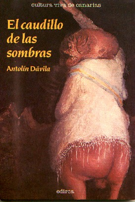

|
Página oficial del escritor Antolín Dávila |
|
|
El caudillo de las sombras y otros cuentos 
Este libro de Antolín Dávila
contiene una selección de veinticinco cuentos de su extenso trabajo en este género.
Considerado como uno de los cuentistas más destacados del panorama de
las letras canarias, de él, y del primer cuento que aquí se publica “Dónde
está el muerto”, dijo el crítico literario Alfonso González Jerez, en
la revista Fetasa, lo siguiente: “... y Antolín Dávila, en el que se nos
antoja el mejor cuento de la colección..., consigue un texto de aguda ironía
en el que la fusión entre lo fantástico y lo real se acerca a la perfección”.
Pero además, en este volumen se incluyen, después de haber sido
publicados en prensa y recibido el aplauso general, sobre todo el académico que
los llevaba a las aulas, cuentos como El negro y el ascensor, La niña
de los santos, o El hombre
del espejo, donde el autor alcanza cotas dignas de un experto fabulador y
dominador de este género literario. “El muerto estaba boca abajo y culo al cielo. -Qué ha pasado, qué ha pasado. -Un hombre muerto. Algunos pasaban sin preocuparse. Otros se ponían de puntillas, sin preguntar...” (De
Dónde está el muerto) “Caminaba el licenciado Madera como un tablón de pino finlandés. Sus piernas se estremecían tratando de emular a dos varas tiernas de mimbre. La espalda contrachapada y el abdomen de madera de estiba le daban un aspecto de caudillo sin gloria y sin armas. Pero su escudo estaba carcomido por la polilla o por la ignorancia de su mente estrecha, indigna”... (De El
licenciado Madera)
A la Niña de los Santos le robaron el nombre, y nadie sabe el porqué. Es limpia la jodida, como el alma de un niño chico, te lo digo yo. Allí, junto a una sama de ojos extraviados y un sargo impotente, oliendo el cangrejillo de las brecas y el vaho de el Comandante, la vi por primera vez con ojos de china clueca, la cara blanca como la leche y su nariz de nectarina, guardando apenas un cuerpo de abeja en una camiseta de asillas y una minifalda descolorida”... (De La Niña de los Santos)
|
|
Web creada por Eduardo Dávila: eduardo@eduardodavila.com
|